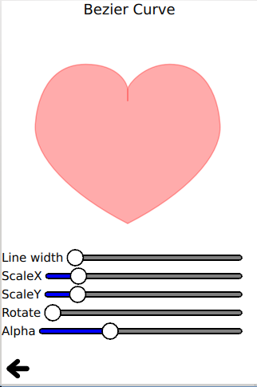

Qt Quick Examples - Canvas
This is a collection of QML Canvas examples.

Canvas is a collection of small QML examples relating to the Canvas type. Each example is a small QML file emphasizing a particular type or feature.
Running the Example
To run the example from Qt Creator, open the Welcome mode and select the example from Examples. For more information, visit Building and Running an Example.
Red heart
Red heart uses the bezier curve API to stroke and fill a red heart.
ctx.beginPath(); ctx.moveTo(75,40); ctx.bezierCurveTo(75,37,70,25,50,25); ctx.bezierCurveTo(20,25,20,62.5,20,62.5); ctx.bezierCurveTo(20,80,40,102,75,120); ctx.bezierCurveTo(110,102,130,80,130,62.5); ctx.bezierCurveTo(130,62.5,130,25,100,25); ctx.bezierCurveTo(85,25,75,37,75,40); ctx.closePath();
Talk bubble
Talk bubble uses the quadraticCurveTo() API to stroke and fill a customized talk bubble:
ctx.beginPath(); ctx.moveTo(75,25); ctx.quadraticCurveTo(25,25,25,62.5); ctx.quadraticCurveTo(25,100,50,100); ctx.quadraticCurveTo(50,120,30,125); ctx.quadraticCurveTo(60,120,65,100); ctx.quadraticCurveTo(125,100,125,62.5); ctx.quadraticCurveTo(125,25,75,25); ctx.closePath();
This example also demonstrates the fillText() API:
ctx.fillStyle = "white"; ctx.font = "bold 17px sans-serif"; ctx.fillText("Qt Quick", 40, 70);
Squircle
Squircle uses a collection of simple moveTo() and lineTo() path APIs to draw a smooth squircle.
Rounded rectangle
Rounded rectangle uses a collection of lineTo() and arcTo() path APIs to draw a rounded rectangle.
Smile face
Smile face uses several paths to draw and fill a smiling face.
Clip
Clip uses the clip API to clip a given image.
ctx.clip(); ctx.drawImage(canvas.imagefile, 0, 0);
Tiger
Tiger uses the SVG path API to draw a tiger with a collection of SVG path strings.
for (var i = 0; i < Tiger.tiger.length; i++) { if (Tiger.tiger[i].width != undefined) ctx.lineWidth = Tiger.tiger[i].width; if (Tiger.tiger[i].path != undefined) ctx.path = Tiger.tiger[i].path; if (Tiger.tiger[i].fill != undefined) { ctx.fillStyle = Tiger.tiger[i].fill; ctx.fill(); } if (Tiger.tiger[i].stroke != undefined) { ctx.strokeStyle = Tiger.tiger[i].stroke; ctx.stroke(); } }
Files:
- canvas/canvas.qml
- canvas/bezierCurve/bezierCurve.qml
- canvas/clip/clip.qml
- canvas/quadraticCurveTo/quadraticCurveTo.qml
- canvas/roundedrect/roundedrect.qml
- canvas/smile/smile.qml
- canvas/squircle/squircle.qml
- canvas/tiger/tiger.js
- canvas/tiger/tiger.qml
- canvas/main.cpp
- canvas/canvas.pro
- canvas/canvas.qrc